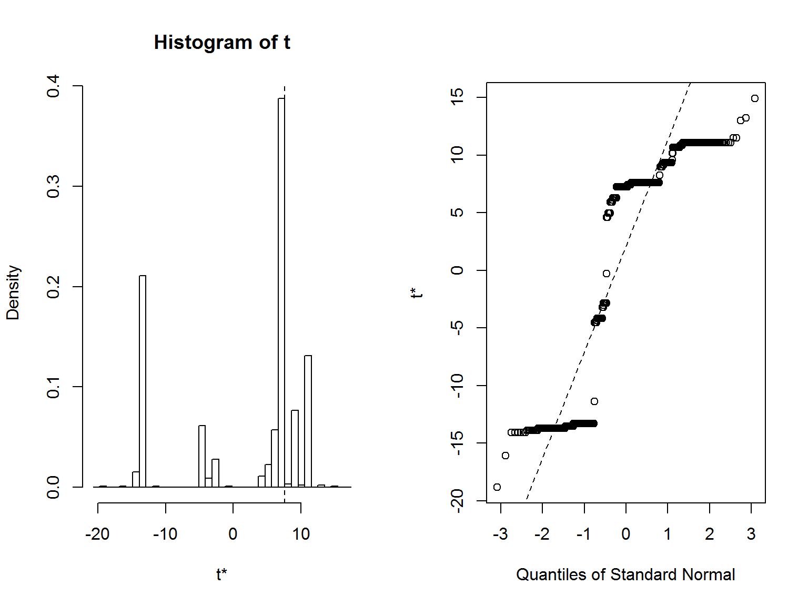
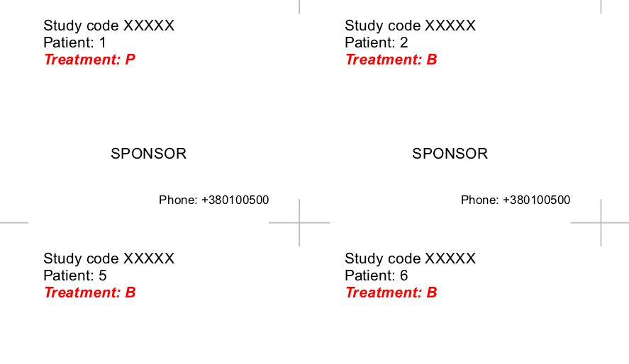
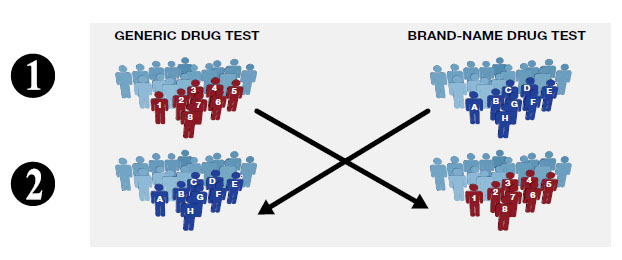
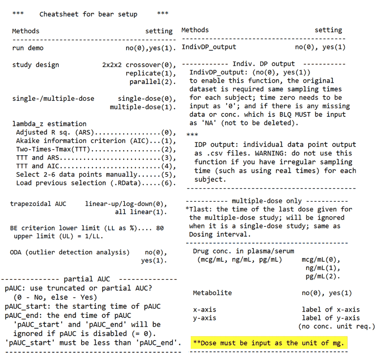

Использование R в ходе клинических исследований
Андрей Огурцов
ПАО НПЦ «Борщаговский химико-фармацевтический завод»
Особенности фармацевтической отрасли
Законодательное регулирование:
США - FDA
Европа - EMA, ICH
Украина - «Державний Експертний Центр МОЗ»
Мы руководствуемся рекомендациями «International Council for Harmonisation of Technical Requirements for Pharmaceuticals for Human Use (ICH)».
Вопросы статистики и обработки данных рассмотрены в E9 Statistical Principles for Clinical Trials и Guideline on the Investigation of Bioequivalence.
Особенности фармацевтической отрасли (продолжение)
Open Source-решения не запрещаются, но и не пропагандируются
FDA в 2012 г. официально одобрило использование R при условии воспроизводимости анализа и результатов
Коммерческое ПО (SAS, Stata, WinNonlin) по-прежнему преобладает
Применение R
Задачи машинного обучения - редкость (xgboost не нужен)
Крайне важен этап планирования: расчет размера выборки, рандомизация, (суррогатные) конечные точки
Статистический анализ требует проверки предпосылок используемых критериев
Иногда нужны относительно экзотические критерии
Предпочтительнее использовать консервативные методы (например, поправка Бонферрони для борьбы с эффектом множественных сравнений)
Расчет размера выборки
Зависит от типа и целей исследования (неуступающая/превышающая эффективность, терапевтическая эквивалентность, биоэквивалентность), от конечных точек, от количества групп
В пакете TrialSize реализовано более 80 функций для расчетов
Но можно посчитать и вручную, в том числе с помощью бутстрепа (если есть данные пилотного исследования)
Лучше быть пессимистом и предусмотреть выбывание пациентов
Пример расчета 1
Cравнение двух средних арифметических в исследовании на неуступающую/превышающую эффективность (разность средних равна 5, стандартное отклонение равно 10):
\[n = \frac{2(z_{\alpha} + z_{\beta})^{2} \sigma^{2}}{ (\epsilon - \delta)^{2}}\]
library(TrialSize)
n <- TwoSampleMean.NIS(alpha = 0.025,
beta = 0.2,
sigma = 10,
k = 1,
delta = 0,
margin = 5)
ceiling(n)## [1] 63Предполагается нормальное распределение!
Пример расчета 2
Для исследования биоэквивалентности:
\[n = \frac{(z_{\alpha} + z_{\beta /2})^{2} \sigma_{1,1}^{2}}{2 (\delta - \left | \epsilon \right |)^{2}}\]
sampleSize <- function(sigma, epsilon, pwr) {
ceiling((qnorm(0.05, lower.tail = FALSE) +
qnorm((1 - pwr) / 2, lower.tail = FALSE))^2 *
(sigma ^ 2) / (2 * (0.223 - epsilon) ^ 2))}
sampleSize(sigma = 0.28, epsilon = 0.05, pwr = 0.80)## [1] 12PowerTOST::CVfromCI(lower = 0.91, upper = 1.15, n = 21,
design = "2x2", alpha = 0.05)## [1] 0.2217306Bootstrap
set.seed(100500)
df <- data.frame(group = rep(c("plac", "treat"), each=10),
pressure = c(rnorm(10, 140, 20) +
rnorm(10, 150, 30),
rnorm(10, 135, 30) +
rnorm(10, 125, 40))/2)
library(purrr)
library(psych)
res <- split(df, df$group) %>%
map(~ describe(.$pressure)) %>%
do.call(rbind, .)| n | mean | sd | median | trimmed | mad | min | max | |
|---|---|---|---|---|---|---|---|---|
| plac | 10 | 141.3438 | 18.99318 | 141.3213 | 140.9249 | 21.88146 | 114.16147 | 171.8774 |
| treat | 10 | 128.3154 | 16.66162 | 134.3372 | 128.9952 | 15.51537 | 99.62615 | 151.5669 |
Bootstrap
shapiro.test(df[df$group == "plac", 2])##
## Shapiro-Wilk normality test
##
## data: df[df$group == "plac", 2]
## W = 0.94746, p-value = 0.6386n <- TwoSampleMean.NIS(alpha = 0.025,
beta = 0.2,
sigma =
sqrt(res$sd[2]^2 + res$sd[1]^2),
k = 1,
delta = 0,
margin = res$mean[2] - res$mean[1])
ceiling(n)## [1] 60Bootstrap
set.seed(500)
new <- data.frame(group = rep(c("plac", "treat"), each=60),
pressure = c(
sample(df[df$group == "plac", 2],
60, replace = TRUE),
sample(df[df$group == "treat", 2],
60, replace = TRUE)))
shapiro.test(new[new$group == "plac", 2])##
## Shapiro-Wilk normality test
##
## data: new[new$group == "plac", 2]
## W = 0.88508, p-value = 3.923e-05Bootstrap
library(broom)
t.test(pressure ~ group, data = new) %>%
tidy() %>% kable()| estimate | estimate1 | estimate2 | statistic | p.value | parameter | conf.low | conf.high | method | alternative |
|---|---|---|---|---|---|---|---|---|---|
| 7.410289 | 139.1937 | 131.7834 | 2.371056 | 0.0194634 | 110.8365 | 1.217175 | 13.6034 | Welch Two Sample t-test | two.sided |
wilcox.test(pressure ~ group, data = new) %>%
tidy() %>% kable()| statistic | p.value | method | alternative |
|---|---|---|---|
| 2086 | 0.1331856 | Wilcoxon rank sum test with continuity correction | two.sided |
Bootstrap
reps_expr <- quote(
data.frame(group = rep(c("plac", "treat"), each=60),
pressure = c(
sample(df[df$group == "plac", 2],
60, replace = TRUE),
sample(df[df$group == "treat", 2],
60, replace = TRUE))))
reps <- replicate(1000, eval(reps_expr), simplify = FALSE)
p_vals <- map_dbl(
reps, ~wilcox.test(pressure~group, data = .x)$p.value)
mean(p_vals < 0.05)## [1] 0.907p_vals <- map_dbl(
reps, ~t.test(pressure~group, data = .x)$p.value)
mean(p_vals < 0.05)## [1] 0.992Пакет boot
library(boot)
medDif <- function(data, indices) {
d <- data[indices, ]
res <- median(d[d$group == "treat", 2]) -
median(d[d$group == "plac", 2])
return(res)
}
results <- boot(data = new,
statistic = medDif,
R = 1000,
strata = new$group)Пакет boot
plot(results)
boot.ci(results, type = "basic")## BOOTSTRAP CONFIDENCE INTERVAL CALCULATIONS
## Based on 1000 bootstrap replicates
##
## CALL :
## boot.ci(boot.out = results, type = "basic")
##
## Intervals :
## Level Basic
## 95% ( 4.190, 28.967 )
## Calculations and Intervals on Original ScaleПакет boot
boot.ci(results, type = "basic")## BOOTSTRAP CONFIDENCE INTERVAL CALCULATIONS
## Based on 1000 bootstrap replicates
##
## CALL :
## boot.ci(boot.out = results, type = "basic")
##
## Intervals :
## Level Basic
## 95% ( 4.190, 28.967 )
## Calculations and Intervals on Original ScaleРандомизация
Рандомизация - случайное распределение субъектов в группы для минимизации систематической погрешности.
library(blockrand)
rand <- blockrand(n = 240,
num.levels = 3,
levels = c("A", "B", "P"),
block.sizes = rep(10, 8))| id | block.id | block.size | treatment |
|---|---|---|---|
| 1 | 1 | 30 | A |
| 2 | 1 | 30 | B |
| 3 | 1 | 30 | B |
| 4 | 1 | 30 | B |
| 5 | 1 | 30 | A |
| 6 | 1 | 30 | B |
Схема рандомизации
rand_txt <- list(text = c("Study code XXXXX",
"Patient: %ID%" ,
"Treatment: %TREAT%"),
col = c("black","black","red"),
font = c(1, 1, 4))
plotblockrand(rand, "rand.pdf",
top = rand_txt,
middle = "SPONSOR",
bottom = "Phone: +380100500",
cut.marks = TRUE, nrow = 4, ncol = 4)
Исследование биоэквивалентности
Сравниваются фармакокинетические параметры тестового (T) и референтного (R) препаратов
Перекрестный дизайн: 2 препарата, 2 периода, 2 последовательности (2х2х2)
Критерий эквивалентности: 90% доверительный интервал для отношений средних геометрических Cmax и AUC0-t находится в пределах 0.8000–1.2500 (80.00–125.00%)

Данные для анализа
data <- read.table("testdata.txt", sep = "\t",
dec = ",", header = TRUE)
kable(head(data))| subj | seq | prd | drug | time | conc |
|---|---|---|---|---|---|
| 1 | 2 | 2 | R | 0.00 | 0.0 |
| 1 | 2 | 2 | R | 0.25 | 36.1 |
| 1 | 2 | 2 | R | 0.50 | 125.0 |
| 1 | 2 | 2 | R | 0.75 | 567.0 |
| 1 | 2 | 2 | R | 1.00 | 932.0 |
| 1 | 2 | 2 | R | 1.50 | 1343.0 |
AUC0-t вычисляется методом трапеций, все фармакокинетические параметры перед анализом логарифмируются.
Расчет AUC0-t
aucCalc <- function(conc, time) {
auc <- numeric(length(time)-1)
for (i in 2:length(time)) {
auc[i-1] <- 0.5 * (conc[i] + conc[i - 1]) *
(time[i] - time[i - 1])
}
return(sum(auc, na.rm = TRUE))
}Визуализация

Смешанная линейная модель
Линейная модель с фиксированными и случайными эффектами имеет вид
\[ y = X \beta + Zb + \epsilon\]
Реализация в R - пакет nlme, функция lme():
library(nlme)
results <- data[data$time == 0, c(1:4)]
results$Cmax <- tapply(data$conc, data$subj2,
max, na.rm = TRUE)
results$Cmax <- as.numeric(results$Cmax)
results$auc <- tapply(data$conc, data$subj2,
aucCalc, time = unique(data$time))
results$auc <- as.numeric(results$auc)
model_Cmax <- lme(log(Cmax) ~ drug + prd + seq,
random = ~1|subj, results)
model_auc <- lme(log(auc) ~ drug + prd+ seq,
random = ~1|subj, results)Расчет доверительных интервалов
ci.Cmax <- intervals(model_Cmax, level = 0.9,
which = "fixed")
ci.auc <- intervals(model_auc, level = 0.9,
which = "fixed")
ci1 <- exp(ci.Cmax$fixed[2, ]) * 100
ci2 <- exp(ci.auc$fixed[2, ]) * 100
ci1_2 <- rbind(ci1, ci2)
colnames(ci1_2) <- c("Нижняя граница 90% ДИ, %",
"Соотношение T/R, %",
"Верхняя граница 90% ДИ, %")
rownames(ci1_2) <- c("Cmax", "AUC(0-t)")
kable(ci1_2)| Нижняя граница 90% ДИ, % | Соотношение T/R, % | Верхняя граница 90% ДИ, % | |
|---|---|---|---|
| Cmax | 97.58596 | 106.23189 | 115.6438 |
| AUC(0-t) | 78.80980 | 98.12902 | 122.1841 |
Реализация в виде shiny-приложения: http://statist.shinyapps.io/bioeq
Пакет bear
Инструкция

Настройки

Спасибо за внимание!
Презентация создана при помощи revealjs